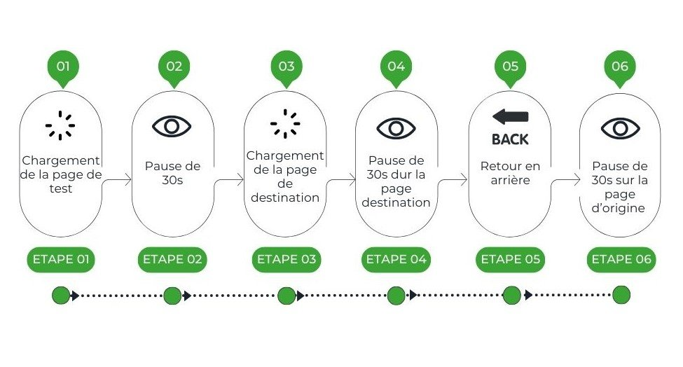
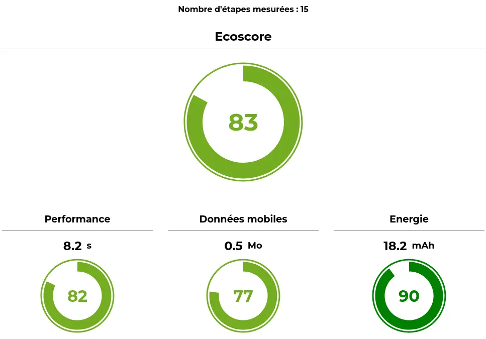
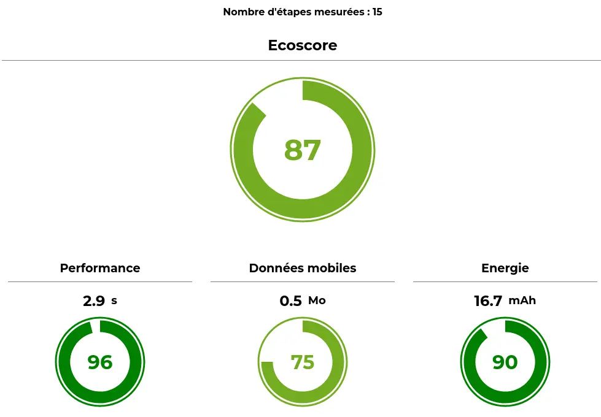
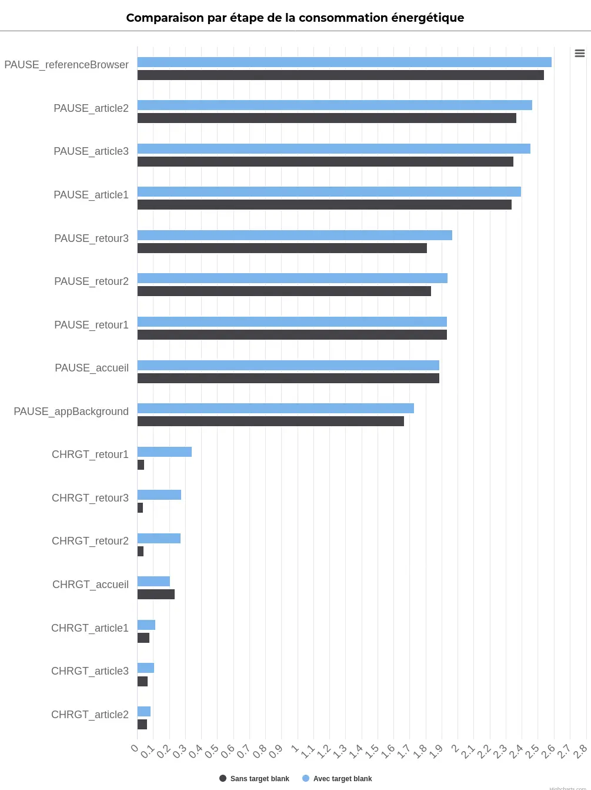

Introduction
Les plus anciens se souviennent peut-être d’une époque lointaine où les navigateurs ne proposaient pas encore d’ouvrir du contenu dans plusieurs onglets. L’apparition de cette possibilité a fait naître un débat qui n’a jusque-là pas trouvé de réponse définitive : faut-il ou non ouvrir les liens par défaut dans un autre onglet ?
Les chiffres clés
Les résultats obtenus pour l’ouverture des liens dans un autre onglet sont synthétisés ainsi :
L’impact global est de 1.9 gCO2eq, 0,4 L d’eau consommée et 4.1 cm2 d’occupation des sols.
Les résultats obtenus pour l’ouverture des liens dans le même onglet sont synthétisés ainsi :
L’impact global est de 1.8 gCO2eq, 0,3 L d’eau consommée et 3.9 cm2 d’occupation des sols.
Sur un site web, le comportement par défaut lors du clic sur un lien est de l’ouvrir dans l’onglet où se trouve déjà l’internaute. Pour revenir à la page initiale, le plus simple est donc d’utiliser la fonctionnalité de retour en arrière du navigateur (ou celle du téléphone). Ceci peut être vu par certains internautes comme un désagrément. Au moins deux solutions sont possibles :
- Côté utilisateur : garder la touche Ctrl appuyée pour ouvrir le lien dans un autre onglet ou cliquer avec la roulette de la souris ou autre
- Côté développeur : forcer l’ouverture du lien dans un nouvel onglet (via l’attribut target=”_blank” ou via JS). Ceci revient néanmoins à ne pas laisser le choix à l’utilisateur. Il est alors recommandé de signaler ce comportement à l’internaute (Règle Opquast 141 – L’utilisateur est averti des ouvertures des nouvelles fenêtres). Sinon, ceci peut provoquer des problèmes d’accessibilité.
Dans tous les cas, target=”_blank” doit s’accompagner d’attributs supplémentaires pour des raisons de sécurité, de la façon suivante :
<a href=”https://blog.greenspector.com/fr/le-petit-bout-de-la-lorgnette/” target=”_blank” rel=”noopener noreferrer”>
Les valeurs “noopener” (https://html.spec.whatwg.org/multipage/links.html#link-type-noopener [EN]) et “noreferrer” (https://html.spec.whatwg.org/multipage/links.html#link-type-noreferrer [EN]) permettent de s’assurer des informations de contexte ne sont pas transmises au clic sur le lien. En apparence redondantes, elles sont ici mentionnées ensemble afin de prendre en charge certains navigateurs (très) anciens : https://stackoverflow.com/a/57630677 [EN].
La discussion sur le fait d’ouvrir ou non les liens dans un autre onglet (ou dans une autre page) ne date pas d’hier et les arguments sont nombreux. On en retrouve une bonne partie ici : https://www.badsender.com/en/2023/01/27/target-blank-links-email/ [EN]
Du point de vue des impacts environnementaux, il y a également matière à discussion. Ouvrir dans un autre onglet pourrait conduire à multiplier inutilement les onglets ouverts, donc à augmenter les impacts environnementaux (en sollicitant davantage le terminal). Inversement, ouvrir le lien dans la même page pourrait rallonger le parcours utilisateur sur le site d’origine en risquant de lui faire perdre sa progression après être revenu en arrière (saisie d’informations, lecture en cours d’un article, etc).
Comme toujours, il est important de revenir aux vraies raisons qui motivent ce choix, notamment s’il s’agit d’améliorer les statistiques de son propre site en le gardant ouvert pendant que l’utilisateur explore d’autres liens (ce qui n’est pas une bonne façon de faire).
À défaut de trouver la réponse idéale à cette problématique, nous avons décidé d’avoir recours à la mesure pour apporter un éclairage supplémentaire.
Méthodologie
Une page de test aussi sobre que possible a été créée. Elle comporte deux liens menant vers la même page. Le premier s’ouvre dans le même onglet, le deuxième dans un autre onglet.
En vue de la mesure, deux scripts GDSL ont été créés pour automatiser le parcours et effectuer les mesures :
- Un script qui consiste à cliquer sur le lien qui s’ouvre dans un autre onglet puis revenir au premier onglet (trois fois de suite)
- Un script qui consiste à cliquer sur le lien qui s’ouvre dans le même onglet puis revenir en arrière via le navigateur directement (trois fois de suite)
Dans chacun de ces parcours, on retrouve les mêmes étapes :
- Chargement de la page de test
- Pause de 30s sur la page de test
- Chargement de la page destination (clic sur le lien)
- Pause de 30s sur la page destination
- Retour en arrière
- Pause de 30s sur la page d’origine
Les étapes 3 à 6 sont répétées 3 fois chacune, dans cet ordre.

Dans tous les cas, la page de destination du lien est la même. L’idée était ici de choisir une page légère mais avec suffisamment de contenu pour que les mesures soient significatives. Nous avons donc choisi un article du blog Greenspector : https://blog.greenspector.com/fr/le-petit-bout-de-la-lorgnette/ Au-delà de la première itération, le cache limite les requêtes effectuées en s’appuyant sur les éléments stockés côté client (comme pour toute page web pour peu qu’elle soit correctement configurée).
Les mesures sont effectuées sur la dernière version en date du navigateur Chrome sur un téléphone Samsung S9 avec la luminosité réglée à 50%, en WIFI. Une dizaine d’itérations de mesures ont été effectuées pour chaque script.
Les mesures ont été effectuées entre le 24 et le 29 août 2023. Suite à ces mesures, un dashboardcampagne (agrégation des données issues des outils Greenspector) a été généré, notamment pour pouvoir comparer les étapes de mesure et calculer un Ecoscore global basé sur les scores de Performance, Données transférées et Energie.
En vue de la projection environnementale, on pose les hypothèses suivantes :
- 100 % des utilisateurs et serveurs en France
- 100% de serveurs complexes
- 51% des utilisateurs sur smartphone, 3% sur tablette, 46% sur PC (stats moyennes pour la France)
Résultats
Les résultats obtenus pour l’ouverture des liens dans un autre onglet sont synthétisés ainsi :

L’impact global est de 1.9 g CO2e, 0,4 L d’eau consommée et 4.1 cm2 d’occupation des sols.
Les résultats obtenus pour l’ouverture des liens dans le même onglet sont synthétisés ainsi :

L’impact global est de 1.8 g CO2e, 0,3 L d’eau consommée et 3.9 cm² d’occupation des sols.
Dans un premier temps, il apparaît donc que l’ouverture des liens dans le même onglet est légèrement plus avantageuse d’un point de vue environnemental. En particulier, il apparaît que le parcours est beaucoup plus court lors de l’ouverture dans le même onglet. En effet, il est plus facile de revenir en arrière via le bouton présent sur les téléphones Android que de passer par la liste des onglets ouverts.
On peut supposer que le fait de garder des onglets ouverts soit davantage impactant du point de vue de la batterie du téléphone. Creusons désormais cela plus en détail.
Le diagramme suivant présente la consommation énergétique des différentes étapes :

En bleu, on trouve l’ouverture de liens dans un autre onglet. En noir, l’ouverture dans le même onglet.
Les étapes du parcours avec ouverture de liens dans le même onglet sont quasi systématiquement moins impactantes. En particulier, ceci est vrai pour les étapes de pause, ce qui semble confirmer l’impact des onglets multiples ouverts lors d’une pause sur l’onglet courant. On retrouve ici le fait que le retour en arrière est beaucoup plus simple via le bouton du téléphone que via la liste des onglets.
Pour l’ensemble des étapes mesurées, on constate très peu de données transférées. Toutefois, pour un utilisateur ayant recours au retour en arrière, il est important de bien intégrer le bfcache (https://web.dev/bfcache/ [EN]). Cette optimisation des navigateurs permet de fluidifier les retours en arrière et en avant.
Conclusion
Si l’on se base sur les métriques et projections environnementales pour le cas de test choisi ici, il apparaît plus avantageux d’ouvrir par défaut les liens dans le même onglet. Il faut en revanche bien garder en tête qu’il ne faut pas que l’internaute perde ainsi sa progression (saisie en cours ou lecture d’une page longue, par exemple). De plus, en vue d’un retour arrière ultérieur, le bfcache doit être correctement implémenté. Dans ce cas, libre à l’utilisateur s’il le souhaite d’ouvrir malgré tout le lien dans un autre onglet via les raccourcis mis à sa disposition. Il reste néanmoins indispensable d’informer sur le comportement des liens s’il ne s’agit pas du comportement par défaut (ainsi que de la langue de la page destination si elle diffère de la page d’origine). Pour conclure, n’oublions pas que l’accessibilité et la qualité (telle que mise en œuvre via les règles d’Opquast) doivent rester une priorité lors de l’intégration de liens.